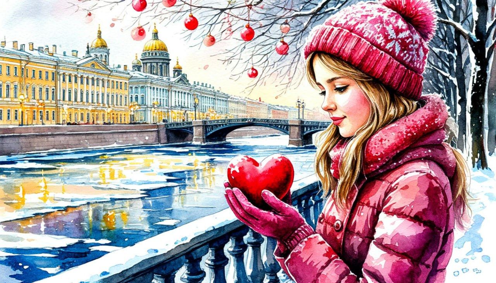

Романтика Рождественского Санкт-Петербурга

Даты тура: со 2 января 2026 года (пт) по 6 января 2026 года (вт)
Стоимость тура:
- 22 600 р. - взрослый
- 22 400 р. - пенсионеры/школьники
- 26 600 р./чел - одноместное размещение
По программе:
- - Дворец Белосельских-Белозерских
- - Территория Петропавловской крепости
- - Посещение Николо-Богоявленского морского собора.
- - Экскурсия в Новою Голландию
- - Посещение Князь-Владимирского собора
- - Экскурсия в Эрмитаж
- - Ораниенбаум
- - Кронштадт
- - Посещение Никольского морского собора
- - Посещение музейно-исторического парка «Остров Фортов»
- - Размещение в отеле "Cosmos Saint-Petersburg Pribaltiyskaya Hotel" 4*
Программа тура:
1 день:
- 17-00- выезд из Костромы от ТРЦ "РИО"
2 день:
- Прибытие в Санкт-Петербург.
- Завтрак в кафе города.
- Экскурсия пройдет по красивейшим местам – главным улицам и проспектам, парадным набережным и площадям. Вы увидите роскошные дворцы, величественные соборы, самые популярные памятники и музеи Северной столицы, полюбуетесь неповторимыми невскими панорамами. А еще проверите, готов ли город к празднованию Рождества.
- Экскурсия во дворец Белосельских-Белозерских. Во дворце сохранились подлинные интерьеры, среди которых выделяются парадные залы на 2-ом этаже: Дубовый зал (бывшая библиотека), использовавшийся как малый концертный зал, Картинная галерея, Парадная столовая, Бежевая гостиная, Зеркальный (бальный) зал с прекрасной акустикой, так как изначально предназначался для проведения концертов и до сих пор используется в этом качестве, Золотая Малиновая гостиная. Во всех этих и других залах сохранилась художественная отделка середины- конца XIX века: камины, светильники, лепнина, картины, зеркала, мебель и многое другое.
- Придя во дворец на экскурсию, Вы увидите великолепные интерьеры дворца и узнаете все интересующие Вас подробности о его архитекторе, владельцах и событиях, связанных с этим старинным особняком.
- Экскурсия по территории Петропавловской крепости.
- Обед в кафе города
- Автобусная экскурсия «Волшебный свет Рождества» с осмотром Троицкого собора, знаменитого Медного всадника Исаакиевского собора
- Посещение Николо-Богоявленского морского собора
- Храм расположен на берегу Крюкова канала. Он уникален по своей барочной архитектуре и сохранил интерьер XVIII века. История собора и его святынь неразрывно связана с историей и традициями Российского
- Экскурсия в Новою Голландию. Остров Новая Голландия обладает притягательной силой. Долгое время его территория со своей удивительной историей и архитектурно-индустриальной красотой была закрыта для публичного посещения. Новая Голландия — уникальный памятник промышленной архитектуры раннего классицизма, один из старейших, если даже не самый старый в России.
- Заселение в отель
- Свободное время.
За дополнительную плату (по желанию) СТРОГО ПРИ БРОНИРОВАНИИ ТУРА:
Вечерняя экскурсия по городу. Стоимость 1100 руб/чел.
- Великолепная, новогодняя атмосфера города на Неве покорит вас миллионами огней иллюминации! Вы попадете в настоящую Новогоднюю сказку и пополните свой фотоальбом самыми зимними, самыми новогодними, самыми волшебными фотографиями!
3 день:
- Завтрак в отеле «шведский стол»
- Автобусная экскурсия «Императорский Санкт-Петербург»
- На этой экскурсии словно в зимней сказке город закружит Вас чередой прекрасных дворцов и особняков, за стенами которых вершились судьбы отдельных людей и целого государства. Ведь Санкт-Петербург более 200 лет был столицей Российской империи. Столичный статус ощущается в нашем городе и по сей день: Невский проспект, Сенатская и Исаакиевская площади, Дворцовая набережная... Весь парадный центр Петербурга связан с правлением династии Романовых, чему и посвящена наша экскурсия.
- Посещение Князь-Владимирского собора
- Возвращение в отель.
- Собор расположен на Петроградской стороне, рядом с Петропавловской крепостью. Его история – отражение истории нашей страны, напоминание о преемственности двух столиц: Санкт-Петербурга и Москвы. Храм не закрывался в советское время и сохранил свои святыни. Среди них чудотворная икона Святого Владимира и частицы его мощей. Церковная община храма первой в городе на Неве возродила традицию ставить вертепы на Рождество.
- Экскурсия в Эрмитаж
- Эрмитаж – один из крупнейших художественных музеев мира. Он начинался как личное собрание императрицы Екатерины II и долгое время оставался закрытым для широкой публики. Сейчас его коллекции насчитывают более 3,5 миллионов экспонатов. Среди них шедевры Леонардо да Винчи, Рембрандта, античная скульптура, египетские древности, настоящая мумия и многое другое.
- Свободное время в Эрмитаже. У Вас будет возможность после экскурсии прогуляться по залам самого большого и интересного музея.
- Свободное время
4 день:
- Завтрак в отеле «шведский стол»
- Выезд из отеля с вещами.
- Ораниенбаум – дворцово-парковый ансамбль, расположенный на южном берегу Финского залива недалеко от Петергофа, единственный пригородный дворцовый комплекс под Санкт-Петербургом, не получивший значительных разрушений во время Великой Отечественной войны. Возникший как загородная резиденция друга Петра I Александра Даниловича Меншикова, он не раз менял и владельцев, и статус, успев побывать резиденцией наследника престола, частной дачей императрицы и великокняжеской усадьбой.
За дополнительную плату (по желанию) СТРОГО ПРИ БРОНИРОВАНИИ ТУРА:
Экскурсия в Большой Меншиковский дворец.- Стоимость: Взрослые 850 руб/чел., дети до 13,99 лет - 250 руб./чел., дети с 14 до 17,99 лет - 650 руб/чел.
- Этот дворец является центром и старейшим сооружением дворцово-паркового ансамбля Ораниенбаума. Его трёхвековая история знала и времена расцвета, и периоды упадка. Созданный в начале XVIII века по воле сподвижника Петра I А.Д. Меншикова, этот дворец стал архитектурным чудом своего времени, затмив роскошью даже Петергоф. Серьезной переделке интерьеры здания подверглись в середине XIX веке, когда оно становится собственностью герцогов Мекленбург-Стрелицких.
- Автобусная экскурсия в Кронштадт «Русскому Флоту быть!»
- Экскурсия познакомит Вас с удивительным городом, овеянным военно-морской славой и расположенном на небольшом острове Котлин в центре Финского залива. Этот город успел побывать и «ключом», и «замком», не потеряв короны. Во время экскурсии Вы увидите целый ряд оборонительных сооружений XVIII-XIX веков, памятники русским морякам и гавани, откуда корабли отправлялись в военные походы и кругосветные плавания, сможете шепнуть желание на ушко волшебному дереву.
- Посещение музейно-исторического парка «Остров Фортов»
- Это первый и самый большой в России парк, посвящённый военно-морскому флоту. На площади в 9 га располагается несколько тематических площадок. Вы сможете прогуляться по Аллее героев российского флота, которая рассказывает о более чем трех веках его истории, осмотреть маяк памяти с 200 именами героев-моряков, начиная с эпохи Петра I и до наших дней.
- Поздний обед в кафе Санкт-Петербурга
- Выезд из города.
- Ночной переезд
5 день:
Прибытие в Кострому в первой половине дня (ориентировочно)
В стоимость тура входит:
- - проживание в гостинице*
- * Cosmos Saint-Petersburg Pribaltiyskaya Hotel 4* (Номер реестровой записи: С782024022202)
- - питание: 3 завтрака + 2 обеда
- - услуги гида-экскурсовода
- - экскурсионная программа
- - автобусное обслуживание по программе тура
Дополнительно оплачиваются (по желанию) СТРОГО ПРИ БРОНИРОВАНИИ ТУРА :
- - Вечерняя экскурсия по Санкт-Петербургу - 1100 руб./чел.
- - Экскурсия в Большой Меншиковский дворец - Взрослые 850 руб/чел., дети до 13,99 лет - 250 руб./чел., дети с 14 до 17,99 лет - 650 руб/чел.
Стоимость тура не зафиксированы и могут быть изменены в большую или меньшую сторону в зависимости от уровня спроса в любой момент.
Время начала экскурсий и их порядок указано ориентировочно.
Фирма-исполнитель оставляет за собой право замены экскурсий без уменьшения общего объема экскурсионной программы.
По вопросам бронирования обращайтесь: